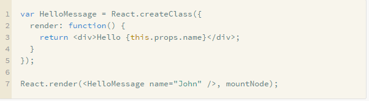
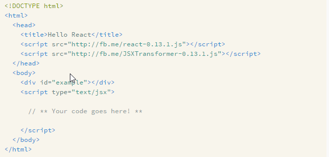
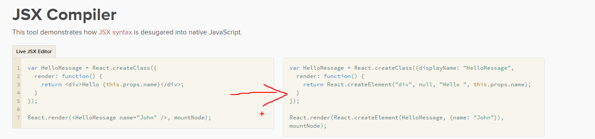
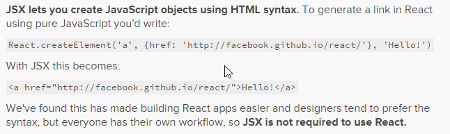

ReactJS
WTF
Disclaimer
Actual problems
Low efficiency - jQuery, Knockout, AngularJS
Hard to re-use existing html/js parts - jQuery, Knockout
Lock-In: AngularJS, ReactJs*
Opinionated Architecture: AngularJS
Accidental Complexity: AngularJS
Testing: ??
Server-side rendering: AngularJS
Plugin - Widget - Directive - Component
Why ReactJs
React isn't an MVC framework
React as the
V
in MVC
AngularJS and React
,
AngularJS and React 2
Backbone and React
,
Ember and React
React doesn't use templates
Reactive updates are dead simple
ReactJS is an implementation of web components idea
Anyone know how will it be when web components become a standard???
Show me the source, Luke

JSX

JSX

JSX

React guides
components are just like functions
reusable components
component lifecycle
the ref string attribute
advanced performance
Addons/Mixins in React.addons
CSSTransitionGroup
React link
Immutability Helpers
and many more
Tools
jsx integrations
react developer tool
Flux - as new religion
holy war in action
Exmaples
Examples
Advantages
Team development, following component-based application, CSS
Reusable components
Readable UI
Extremely efficient for dynamic pages
Problems
https://github.com/facebook/react/issues
Slows down velocity of work in the first step
Will never support IE8 and lowers
Too much code for statics stuff
No common best practices, create base components for your app (FLUX?)
how long it will be trendy?? who knows?? maybe AureliaJS
Performance
tyc
pyc
kyc
Who uses ReactJs
Facebook
Instagram
Vivaldi
Khan Academy
The New York Times’s 2014 Red Carpet Project